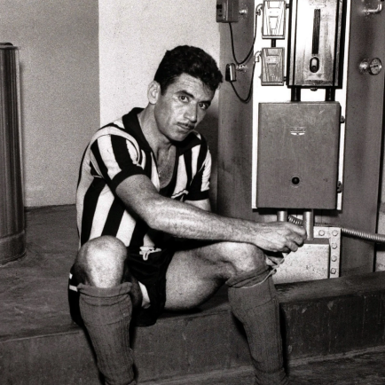
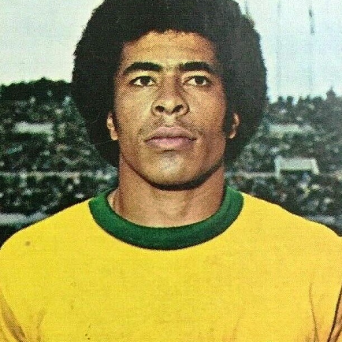
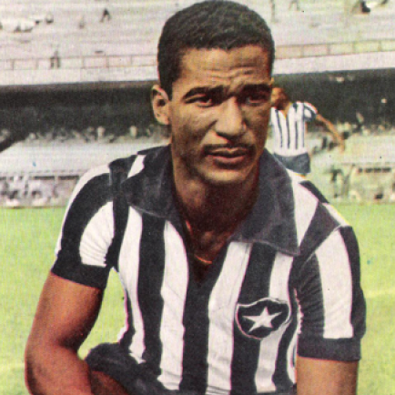
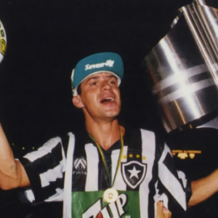

Botafogo
A história do Botafogo de Futebol e Regatas começa em 1891, data da fundação do Grupo de Regatas Botafogo na cidade do Rio de Janeiro. Três anos depois, o grupo se transformou em Club de Regatas Botafogo e, em 1904, surgiu o Botafogo Football Club. Após 38 anos com as duas agremiações existindo em paralelo, a fusão entre os dois clubes criou o Botafogo de Futebol e Regatas, atualmente uma das entidades esportivas mais populares do Brasil.
Títulos
Campeonato Brasileiro: 2
Copa Conmebol: 1
Torneio Rio-São Paulo: 4
Campeonato carioca: 19

Ídolos
-

- 
- 
- 
- 
Garrincha
Para alguns, ele era o Anjo das Pernas Tortas. Para outros, será sempre a Alegria do Povo. Manoel Francisco dos Santos entrou para a história do futebol mundial como Garrincha, alias, nome de um pássaro que, segundo as lendas, preferia morrer a viver em cativeiro. Com seus dribles, fez do Botafogo um dos grandes clubes do mundo, e, acima de tudo, o homem dos dois primeiros títulos mundiais do Brasil. Mas sua história também é a do destino trágico, o que faz de Mané um personagem romântico.
Nilton Santos
O elo perfeito entre o estilo clássico de Domingos da Guia, que o antecedeu, e o papel de lateral participante, ofensivo, de Carlos Alberto Torres, que o sucedeu. Nílton Santos, pelo talento (e pela vocação de atacante trazida das peladas em Flecheiras), foi o primeiro lateral a projetar-se conscientemente ao campo adversário, ousadia não permitida até ali. A vida inteira jogador do Botafogo, foi titular absoluto das seleções que deram ao Brasil os seus primeiros títulos mundiais.
Jairzinho
Campeão do mundo com a Seleção Brasileira em 1970, foi o primeiro jogador na história a marcar gols em todos os seis jogos de um Mundial. Por sua atuação acabou recebendo o apelido de Furacão da Copa. Atacante revelado pelo Botafogo F.R., do qual é um dos grandes ídolos.
Didi
Com classe e categoria, foi um dos maiores médios volantes de todos os tempos, e ainda foi um dos líderes do clube Botafogo de Futebol e Regatas, além de possuir o mérito de ter criado a "folha seca". Esta técnica consistia numa forma de se bater na bola numa cobrança de falta, com o lado externo do pé, hoje vulgarmente chamada "trivela". Ela tem esse nome pois esse estilo de cobrar falta que dava à bola um efeito inesperado, semelhante ao de uma folha caindo. O lance ficou famoso quando Didi marcou um gol de falta nesse estilo contra a Seleção do Peru, nas eliminatórias para a Copa do Mundo de 1958.
Tulio Maravilha
Foi em 1995 que o jogador juntamente com o Botafogo sagrou-se campeão brasileiro. Em uma entrevista, o jogador afirmou que aquele foi o seu melhor momento. “Maior momento foi em 1995, fui o artilheiro, fiz gols nos três jogos decisivos. Fui um dos responsáveis por aquele título que foi tão difícil. Vai completar 25 anos daquela conquista e você vê a dificuldade que é ser campeão brasileiro. Vivi dois anos mágicos e perfeitos. Em 1995, foi espetacular, tive uma média de gols fantástica se comparada com Cristiano Ronaldo e Lionel Messi”,
Estadio Nilton Santos
O Estádio Olímpico Nilton Santos, popularmente conhecido como Engenhão, é um estádio poliesportivo localizado no antigo terreno da Rede Ferroviária Federal, no bairro do Engenho de Dentro, na cidade do Rio de Janeiro e pertencente a Prefeitura Municipal do Rio de Janeiro, cedido ao Botafogo de Futebol e Regatas, seu arrendatário. O estádio foi inaugurado em 30 de junho de 2007.